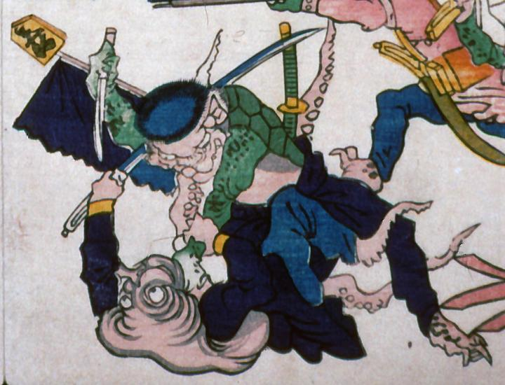

蛸に馬乗りになって短刀で止めを刺そうとする河童。蛸は日本刀で応戦している。河童には皿と甲羅がある。腕と甲羅だけが緑色である。紺色のズボンをはいている。蛸は紺色の軍服を着ている。
出典：親書誌：A5_pushkin_0041：新宮魚勝戦；シングウウオガッセン／日付：2011／資源識別子：A5_pushkin_0041_0001_0000
Copyright (c)2010- International Research Center for Japanese Studies, Kyoto, Japan. All rights reserved.